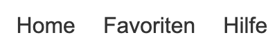
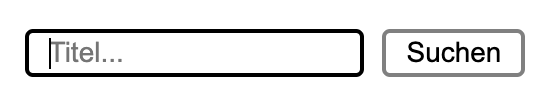
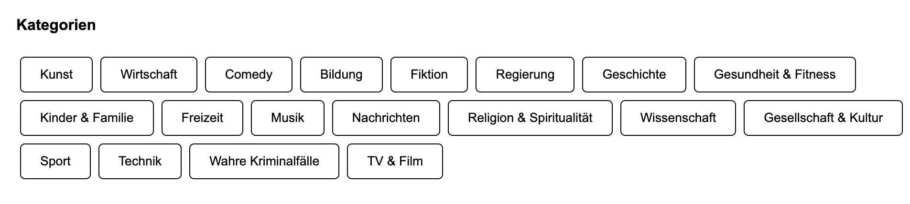

Hilfe und Support
Überblick
Willkommen bei "Easy Play"! Diese Webseite ermöglicht es Ihnen, Ihre Lieblingspodcasts zu entdecken, zu hören und zu verwalten. Nutzen Sie die nachstehenden Anweisungen, um sich mit den Hauptfunktionen unserer Seite vertraut zu machen.
Navigation
Nutzen Sie die Hauptnavigation oben auf der Seite, um zwischen den verschiedenen Bereichen der Webseite zu wechseln:
- Home: Entdecken Sie die neuesten und empfohlenen Podcasts.
- Favoriten: Zeigt Ihre gespeicherten Lieblingspodcasts an.
- Hilfe: Auf dieser Seite finden Sie Unterstützung und Anleitungen zur Nutzung der Webseite.
Podcasts suchen
Um nach einem bestimmten Podcast zu suchen:
- Klicken Sie auf das Suchsymbol in der oberen rechten Ecke.
- Geben Sie den Titel des Podcasts in das Suchfeld ein.
- Klicken Sie auf die Schaltfläche "Suchen", um die Ergebnisse anzuzeigen.
Podcasts zu Favoriten hinzufügen

Um Podcasts zu Ihrer Favoritenliste hinzuzufügen:
- Suchen Sie nach einem Podcast oder durchsuchen Sie die empfohlenen Podcasts auf der Homepage.
- Klicken Sie auf das Herzsymbol oder die Schaltfläche "Zu Favoriten hinzufügen".
- Die hinzugefügten Podcasts werden in Ihrem Favoritenbereich unter "Favoriten" angezeigt.
Kategorien und Empfehlungen
Sie können auch Podcasts nach Kategorien entdecken:
- Auf der Startseite finden Sie eine Liste von Podcast-Kategorien.
- Klicken Sie auf eine Kategorie, um die dazugehörigen Podcasts zu durchsuchen.
Mobile Navigation
Wenn Sie die Webseite auf einem Mobilgerät besuchen:
- Klicken Sie auf das Menüsymbol in der oberen rechten Ecke, um die Navigation zu öffnen.
- Um das Menü zu schließen, klicken Sie auf das Schließen-Symbol .
Fehlerbehebung
Falls Sie Probleme bei der Nutzung der Webseite haben:
- Stellen Sie sicher, dass Ihr Browser auf dem neuesten Stand ist.
- Versuchen Sie, die Seite neu zu laden.
- Überprüfen Sie Ihre Internetverbindung.